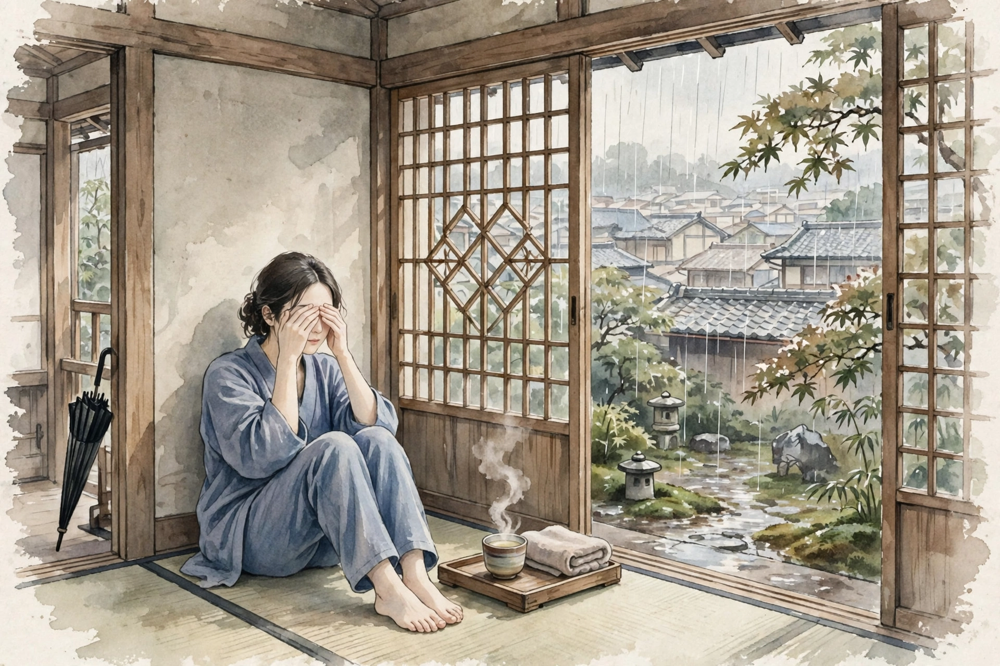

京都で雨の日に気になる目の疲れ感｜低気圧の日の過ごし方とセルフケア、受診の目安

雨の朝、目覚めたときから目が重い。曇り空の下では光がぼんやり広がって見え、夕方になると目がしょぼしょぼして、小さな文字が見えにくくなる——。 天気のよい日は気にならない目の疲れ感が、雨の日や気圧の下がる日に表に出やすい、という方は少なくありません。 この記事では、雨の日・低気圧の日に感じる目の疲れ感について、一般的な解説と、気圧の変化や室内で過ごす時間の長さ、画面時間など考えられる要因の整理、雨の日に取り入れやすいセルフケア、受診の目安をまとめました。 なお、観光の後に感じる目の疲れ感を取り上げた観光の後の目の疲れ感の記事、朝に感じる目の疲れ感を取り上げた朝の目の疲れ感の記事、50代の目の疲れ感を取り上げた50代の目の疲れ感の記事とは場面を分け、ここでは「雨の日・低気圧という天気と、目の疲れ感」に焦点を当ててご紹介します。
雨の日・低気圧の日の目の「疲れ感」とは
目の疲れ感は、目が重い・しょぼしょぼする・かすんで見える、といった感覚を表す一般的な言い方で、それ自体が一つの病名というわけではありません。 感じ方もさまざまで、夕方になると目の奥が重く感じる方もいれば、まばたきの回数が増える方、光がまぶしく感じる方もいます。
その中には、天気との結びつきを感じる方もいます。天気のよい日は気にならないのに、雨の日や気圧の下がる日には朝から目の疲れ感が目立つ——。感じ方には個人差がありますが、要因が一つではなく重なっていることも多いため、まずは「どんな天気の日に・どの場面で・休むとどう感じるか」を振り返ってみることが、無理のないケアの出発点になります。 肩・首まわりのこり感とあわせて感じる方は、デスクワーク後に気になる首こりの記事もあわせてご覧ください。
雨の日・低気圧の日の目の疲れ感に考えられる要因
雨の日の目の疲れ感の背景には、一つの原因ではなく、天気そのものと、雨の日の過ごし方の積み重ねが重なっていることがあります。一般に、要因として次のようなものが挙げられます。いずれも断定ではなく、ご自身の体と日常を振り返るための整理としてご覧ください。
- 気圧の変化：雨の前や雨の日は気圧が下がりやすく、その変化を体が敏感に受け止める方もいます。自律神経のバランスが揺らぎやすい日ともいわれ、その揺らぎが目のまわりの重だるさとして感じられることがあります
- 室内で過ごす時間の長さと画面時間：雨の日は外出を控え、家の中で過ごす時間が長くなりがちです。スマートフォンやパソコンの画面を見る時間が増えると、目を休ませる機会が減り、目の疲れ感を意識しやすくなります
- 光の変化：曇り空の日は光の量や色合いが変わり、室内の明るさとの差も大きくなりがちです。明暗の変化に目が慣れにくく、目の疲れ感として感じられることがあります
- 湿気と冷え：雨の日は湿度が高く、気温も下がりやすい日です。湿った空気や冷えの中で過ごすと、体全体がこわばりやすく感じられ、目のまわりも重く感じる方もいます。冷えについては冷えの記事もあわせてご覧ください
- 睡眠の乱れ：雨音や気圧の変化で眠りが浅くなる方もいます。眠りが足りない日が続くと、目の疲れ感も目立ちやすくなります。夜の過ごし方については寝つきと疲労感の記事も参考にしてみてください
- 肩・首まわりのこり感：雨の日は傘をさして歩く姿勢や、室内でうつむいて過ごす時間が増え、肩や首まわりがこりやすくなります。目のまわりの重さと肩・首のこり感をあわせて感じる方もいます。雨の日の肩まわりについては雨の日の肩こりの記事もあわせてご覧ください
- 目を酷使しやすい日の重なり：雨の日は読書や細かい手作業など、目を近くのものに向け続ける過ごし方が増えることもあります。近くを見続ける時間が長いと、目の疲れ感を意識しやすくなります
- 頭の重さとの重なり：低気圧の日は、頭の重さと目の疲れ感をあわせて感じる方もいます。頭まわりの感じ方については雨の日の頭の重さの記事も参考にしてみてください
東洋医学では、目の疲れ感は「肝」との結びつきで捉え、目のまわりの重さや、肩・首まわりのこり感、眠りの浅さが、その巡りの滞りと関係すると考えます。 当サロンのお悩み別ガイドでも、施術でのアプローチをご紹介していますので、あわせてご覧ください。
雨の日に取り入れられるセルフケア
室内で過ごす時間が長くなる雨の日にも取り入れやすい対処をまとめました。目の疲れ感が強いときは無理をせず、まずは目を休ませることを優先してください。
- 目を閉じて休ませる：数分だけ目を閉じ、まぶたの力を抜いて休ませる時間をとってみてください
- 遠くを見る：窓の外の景色や部屋のいちばん遠いところを、ぼんやり眺める時間をとってみてください
- 蒸しタオルで目元を温める：温かく絞ったタオルを目元にのせ、目まわりを温める時間をとってみてください。熱すぎると感じたらすぐに外してください
- まばたきを意識する：画面を見ているとまばたきの回数が減りがちです。意識してゆっくりまばたきをしてみてください
- 画面の明るさと距離を見直す：画面の明るさを部屋の明るさに合わせ、画面との距離を少し離してみてください
- 部屋の明るさを整える：曇り空の日は室内が暗くなりがちです。手元が暗いと感じたら、明かりを足してみてください
- 濡れた服や靴下は早めに替える：雨に濡れて帰宅したときは、冷えを残さないよう早めに着替えてみてください
- こまめに水分をとる：のどの渇きを感じにくい日こそ、温かい飲み物や水を一口ずつこまめにとってみてください
- 目の疲れ感の様子を天気とあわせてメモする：いつ・どんな天気の日に・どのくらい続いたかを簡単に書き留めておくと、天気との結びつきを含めたご自身のパターンが見えてきます。受診の際の手がかりにもなります
京都は、雨の日でも楽しめる寺社の拝観や美術館のある街です。 ただし、雨に濡れた石畳や石段は滑りやすくなります。底に滑り止めのある靴を選び、途中で腰かけて休む場所を先に決めておくと、目の様子を見ながら無理なく回れます。
こんなときは医療機関へ
目の疲れ感の多くは日常の積み重ねと関係しますが、中には早めの確認が必要な場合もあります。次のような場合は、眼科や内科など医療機関への受診をご検討ください。
- 視力が急に下がったように感じる
- 目のかすみが片目だけに出る、視野の一部が見えにくい
- 目の痛みや充血が続いている
- 目やにやかゆみが強い
- 光がまぶしくてつらい
- 頭痛や吐き気をともなう
- 目の疲れ感が日に日に強くなる、感じる頻度が増えている
- 市販の目薬を使ってもおさまらず、日常生活に支障が出ている
目の疲れ感の多くは日常の積み重ねと関係しますが、中には早めの確認が必要な場合もあります。ステラアルタイルは医療機関ではありません。施術はリラクゼーションと美容を目的としたもので、診断や治療は行いません。気になる症状がある場合は、まず医療機関へご相談ください。
サロンのご案内 — ステラアルタイル（京都）
ステラアルタイルは、京都市内の女性専用プライベートサロンです（阪急京都河原町駅・京阪祇園四条駅からご利用いただけます。詳しい住所は予約確定後にご案内します）。 オイルマッサージと美容整体を組み合わせ、背中・脚・腕・頭まわりまで全身の巡りをたどるように丁寧にケアし、目もと・頭まわり、肩・首まわりのケアも含みます。施術の前には、その日の体の状態についてカウンセリングを行い、力加減を調整しながら進めます。日々の体の使い方や休み方についてもお伝えします。 夕方からの営業ですので、お仕事帰りにもご利用いただけます。
基本コースは90分10,000円（税込）の1コースです。月〜土17:00〜22:00（日曜休み）、完全予約制です。 現在は開院準備中で、予約の受付はまだ開始していません。
■ 目の疲れと向き合うための本（PR）
目の疲れ感について、もう少し詳しく知りたい方へ。目のはたらきや、日々の過ごし方を解説した本を3冊ご紹介します。（このコーナーのリンクにはアフィリエイトリンク（PR）が含まれます。掲載している本の内容は一般的な解説としてご紹介しています。）


- 施術メニュー（オイルマッサージ・美容整体）
- お悩み別ガイド
- 京都で観光の後に気になる目の疲れ感｜要因の整理とセルフケア、受診の目安
- 京都で朝に気になる目の疲れ感｜起き抜けの目の重さとセルフケア、受診の目安
- 京都で50代に気になる目の疲れ感｜年代と観光・画面時間の見直しとセルフケア、受診の目安
- 京都で雨の日に気になる肩こり｜低気圧の日の過ごし方とセルフケア、受診の目安
- 京都で雨の日に気になる頭の重さ｜低気圧の日の過ごし方とセルフケア、受診の目安
- 京都で冷えが気になるとき｜温め方と日常の見直し
- セルフケア資料ライブラリ・無料姿勢チェック
- 料金・営業時間
- よくある質問
- ご予約・お問い合わせ